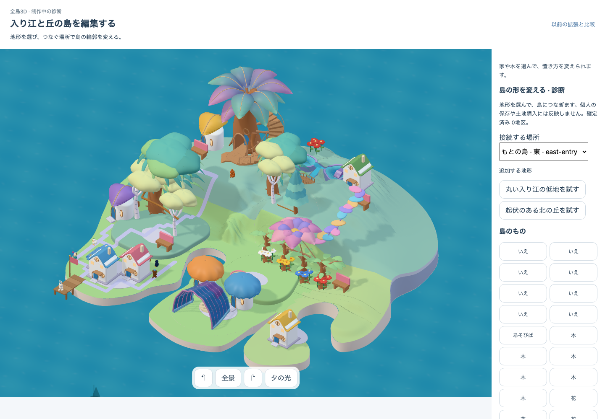
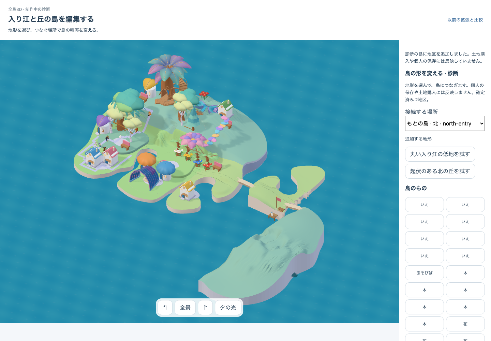
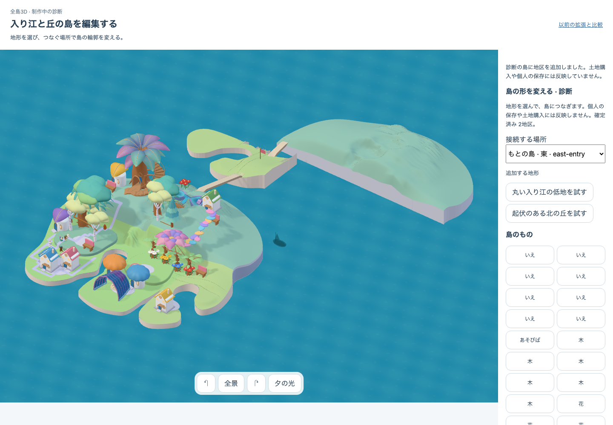
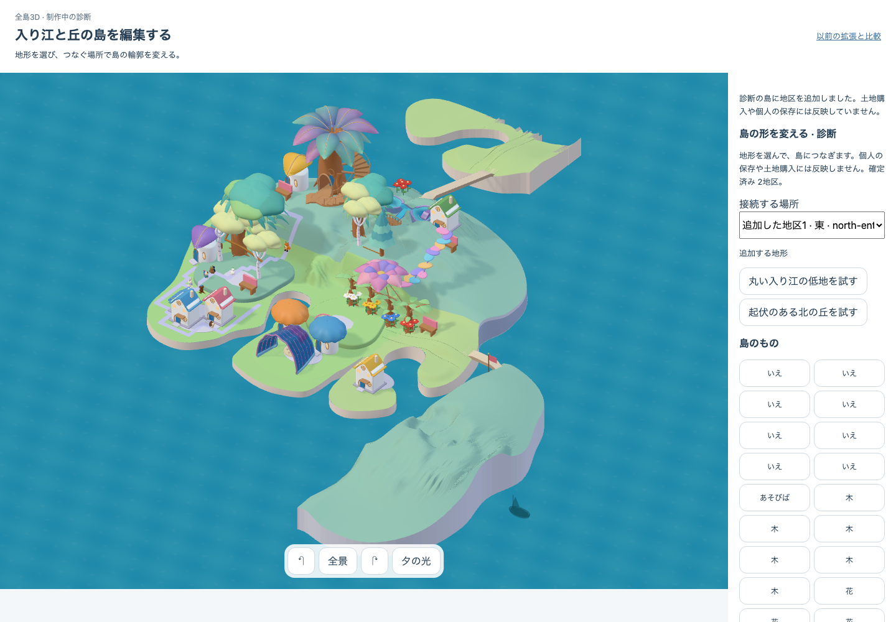
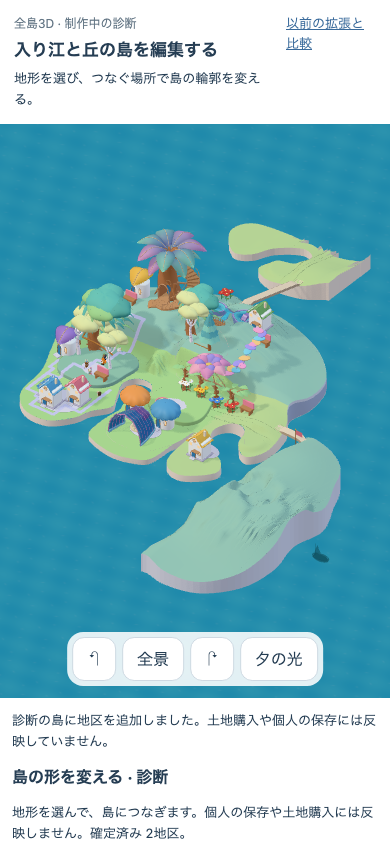

実app: /prototypes/place-qa/authored.html?art=whole&districts=1 · build district-assembly-c7 · delivery DEV / VITE_NATIVE_GROWING_ART=true · terrain candidate native05-district-shapes-rough-v1 · whole candidate native05-growth-assembly-v1+source-shading-v1
機能旅程の終端はPASS。美術HOLD・独立観察N=0。追加地形の切断面と長い待ち、地区追加で既存桟橋が動く不具合が残る。配置・成熟から地形が変わる結果ではない。




